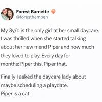

0

0


Ancient Slashdot reader erice shares the findings from a recent study showing that while AI helped researchers publish more often and boosted their careers, the resulting papers were, on average, less useful. "You have this conflict between individual incentives and science as a whole," says James Evans, a sociologist at the University of Chicago who led the study. From a recent IEEE Spectrum article: To quantify the effect, Evans and collaborators from the Beijing National Research Center for Information Science and Technology trained a natural language processing model to identify AI-augmented research across six natural science disciplines. Their dataset included 41.3 million English-language papers published between 1980 and 2025 in biology, chemistry, physics, medicine, materials science, and geology. They excluded fields such as computer science and mathematics that focus on developing AI methods themselves. The researchers traced the careers of individual scientists, examined how their papers accumulated attention, and zoomed out to consider how entire fields clustered or dispersed intellectually over time. They compared roughly 311,000 papers that incorporated AI in some way -- through the use of neural networks or large language models, for example -- with millions of others that did not.
The results revealed a striking trade-off. Scientists who adopt AI gain productivity and visibility: On average, they publish three times as many papers, receive nearly five times as many citations, and become team leaders a year or two earlier than those who do not. But when those papers are mapped in a high-dimensional "knowledge space," AI-heavy research occupies a smaller intellectual footprint, clusters more tightly around popular, data-rich problems, and generates weaker networks of follow-on engagement between studies. The pattern held across decades of AI development, spanning early machine learning, the rise of deep learning, and the current wave of generative AI. "If anything," Evans notes, "it's intensifying." [...] Aside from recent publishing distortions, Evans's analysis suggests that AI is largely automating the most tractable parts of science rather than expanding its frontiers.
Read more of this story at Slashdot.
An anonymous reader quotes a report from the Korea Herald: South Korea will begin enforcing its Artificial Intelligence Act on Thursday, becoming the first country to formally establish safety requirements for high-performance, or so-called frontier, AI systems -- a move that sets the country apart in the global regulatory landscape. According to the Ministry of Science and ICT, the new law is designed primarily to foster growth in the domestic AI sector, while also introducing baseline safeguards to address potential risks posed by increasingly powerful AI technologies. Officials described the inclusion of legal safety obligations for frontier AI as a world-first legislative step.
The act lays the groundwork for a national-level AI policy framework. It establishes a central decision-making body -- the Presidential Council on National Artificial Intelligence Strategy -- and creates a legal foundation for an AI Safety Institute that will oversee safety and trust-related assessments. The law also outlines wide-ranging support measures, including research and development, data infrastructure, talent training, startup assistance, and help with overseas expansion.
To reduce the initial burden on businesses, the government plans to implement a grace period of at least one year. During this time, it will not carry out fact-finding investigations or impose administrative sanctions. Instead, the focus will be on consultations and education. A dedicated AI Act support desk will help companies determine whether their systems fall within the law's scope and how to respond accordingly. Officials noted that the grace period may be extended depending on how international standards and market conditions evolve. The law applies to three areas only: high-impact AI, safety obligations for high-performance AI and transparency requirements for generative AI.
Enforcement under the Korean law is intentionally light. It does not impose criminal penalties. Instead, it prioritizes corrective orders for noncompliance, with fines -- capped at 30 million won ($20,300) -- issued only if those orders are ignored. This, the government says, reflects a compliance-oriented approach rather than a punitive one. Transparency obligations for generative AI largely align with those in the EU, but Korea applies them more narrowly. Content that could be mistaken for real, such as deepfake images, video or audio, must clearly disclose its AI-generated origin. For other types of AI-generated content, invisible labeling via metadata is allowed. Personal or noncommercial use of generative AI is excluded from regulation. "This is not about boasting that we are the first in the world," said Kim Kyeong-man, deputy minister of the office of artificial intelligence policy at the ICT ministry. "We're approaching this from the most basic level of global consensus."
Korea's approach differs from the EU by defining "high-performance AI" using technical thresholds like cumulative training compute, rather than regulating based on how AI is used. As a result, Korea believes no current models meet the bar for regulation, while the EU is phasing in broader, use-based AI rules over several years.
Read more of this story at Slashdot.
Intel says it struggled to satisfy demand for its AI data-center CPUs while new PC chips squeeze margins. CEO Lip-Bu Tan framed the turnaround as supply-constrained, not demand-constrained, with manufacturing yields (18A) improving but still below targets. Reuters reports: The forecast underscores the difficulties faced by Intel in predicting global chip markets, where the company's current products are the result of decisions made years ago. The company, whose shares have risen 40% in the past month, recently launched a long-awaited laptop chip designed to reclaim its lead in personal computers just as a memory chip crunch is expected to depress sales across that industry.
Meanwhile, Intel executives said the company was caught off guard by surging demand for server central processors that accompany AI chips. Despite running its factories at capacity, Intel cannot keep up with demand for the chips, leaving profitable data center sales on the table while the new PC chip squeezes its margins.
"In the short term, I'm disappointed that we are not able "to fully meet the demand in our markets," Chief Executive Officer Lip-Bu Tan told analysts on a conference call. The company forecast current-quarter revenue between $11.7 billion and $12.7 billion, compared with analysts' average estimate of $12.51 billion, according to data compiled by LSEG. It expects adjusted earnings per share to break even in the first quarter, compared with expectations of adjusted earnings of 5 cents per share.
Read more of this story at Slashdot.
A federal judge revealed a previously undisclosed ~$800 million, six-year partnership between Epic Games and Google tied to Unreal Engine services and joint marketing. It raises questions about whether the deal influenced Epic's willingness to settle its antitrust case over Android. The Verge reports: [California District Judge James Donato] allowed Epic and Google to keep most of the details of the plan under wraps. But during the hearing, he quizzed witnesses, including Epic CEO Tim Sweeney and economics expert Doug Bernheim, on how it might impact settlement talks -- revealing some hints in the process. "You're going to be helping Google market Android, and they're going to be helping you market Fortnite; that deal doesn't exist today, right?" Donato asked Bernheim, who answered in the affirmative. He also described it as a "new business between Epic and Google."
Sweeney's testimony cracked the mystery a little further. He referred to the agreement as relating to the "metaverse," a term Sweeney has used to refer to Epic's game Fortnite. "Epic's technology is used by many companies in the space Google is operating in to train their products, so the ability for Google to use the Unreal Engine more fullsome... sorry, I'm blowing this confidentiality," Sweeney said. Donato then offered a hard dollar figure on one part of the deal: "An $800 million spend over six years, that's a pretty healthy partnership," he said. We soon learned that refers to Epic spending $800 million to purchase some sort of services from Google: "Every year we've decided against Google, in this year we're deciding to use Google at market rates," he said. Sweeney did throw cold water on the idea that Epic and Google are jointly building a single new product together, though. "This is Google and Epic each separately building product lines," he clarified, when Judge Donato asked what the term sheet referred to with the line "Google and Epic will work together."
Donato seemed potentially leery of the partnership, asking Bernheim whether it could constitute a "quid pro quo" that reduced Epic's incentive to push for terms that would benefit other developers. Currently, Epic is backing a settlement that would see Google reduce its standard app store fees worldwide and allow alternative app stores to register for easy installation on Android. Sweeney disputed the notion that Epic might be getting paid off to soften its terms, when it's the one paying out. "I don't see anything crooked about Epic paying Google off to encourage much more robust competition than they've allowed in the past," he said. "We view this as a significant transfer of value from Epic to Google." He also says the Epic Games Store won't get any special treatment from Android in the future under this deal. It appears that the settlement arrangement is tied to the business deal. Judge Donato suggested that Epic and Google would only make the deal if the settlement goes through. Sweeney says the specific terms of the deal have not yet been reached, but admitted that he expects them to. He told Judge Donato that yes, he considers the settlement and deal "an important part of Epic's growth plan for the future."
Read more of this story at Slashdot.
Longtime Slashdot reader theodp writes: GeekWire takes a look at AI's defining alliance in The Microsoft-OpenAI Files, an epic story drawn from 200+ documents, many made public Friday in Elon Musk's ongoing suit accusing OpenAI and its CEO Sam Altman of abandoning the nonprofit mission (Microsoft is also a defendant). Musk, who was an OpenAI co-founder, is seeking up to $134 billion in damages. "Previously undisclosed emails, messages, slide decks, reports, and deposition transcripts reveal how Microsoft pursued, rebuffed, and backed OpenAI at various moments over the past decade, ultimately shaping the course of the lab that launched the generative AI era," reports GeekWire. "The latest round of documents, filed as exhibits in Musk's lawsuit, [...] show how Nadella and Microsoft's senior leadership team rally in a crisis, maneuver against rivals such as Google and Amazon, and talk about deals in private."
Even though Microsoft didn't have a seat on the OpenAI board, text messages between Microsoft CEO Satya Nadella and OpenAI CEO Sam Altman following Altman's firing as CEO in Nov. 2023 (news of which sent Microsoft's stock plummeting), revealed in the latest filings, show just how influential Microsoft was. A day after Altman's firing, Nadella sent Altman a detailed message from Brad Smith, Microsoft's president and top lawyer, explaining that Microsoft had created a new subsidiary called Microsoft RAI (Responsible Artificial Intelligence) Inc. from scratch -- legal work done, papers ready to file as soon as the WA Secretary of State opened Monday morning -- and was ready to capitalize and operationalize it to "support Sam in whatever way is needed," including absorbing the OpenAI team at a calculated cost of roughly $25 billion. (Altman's reply: "kk"). Just days later, as he planned his return as CEO to the now-reeling-from-Microsoft-punches nonprofit, Altman joined Microsoft's Nadella, Smith, and CTO Kevin Scott in a text messaging thread in which the four vetted prospective board members to replace those who had ousted Altman. Later that night, OpenAI announced Altman's return with the newly constituted board.
If you like stories with happy Microsoft endings, as part of an agreement clearing the way for OpenAI to restructure as a for-profit business, Microsoft in October received a 27% ownership stake in OpenAI worth approximately $135 billion and retains access to the AI startup's technology until 2032, including models that achieve AGI.
Read more of this story at Slashdot.
Waymo has launched its paid robotaxi service in Miami, marking its sixth U.S. market and the company's first expansion of 2026. CNBC reports: As U.S. competition has lagged, Waymo's planned 2026 expansions could lock in rider demand and loyalty in the U.S. To start, Waymo will offer its services within a 60-square-mile area that includes Miami's Design District, Wynwood, Brickell and Coral Gables neighborhoods, the Google sister company said.
The company began testing its vehicles in the Florida city in early 2025. Waymo said it plans to extend its service to the Miami International Airport in the near future, but did not give a specific timeline. The company said "nearly 10,000 residents" of Miami have already signed up to try its robotaxi service, and Waymo will be "inviting new riders on a rolling basis." Riders can hail a Waymo robotaxi in Miami using the company's app. Waymo is partnering with mobility company Moove for fleet management services including vehicle charging, cleaning and repairs.
Read more of this story at Slashdot.
An anonymous reader quotes a report from Ars Technica: It's no secret that students worldwide use AI chatbots to do their homework and avoid learning things. On the flip side, students can also use AI as a tool to beef up their knowledge and plan for the future with flashcards or study guides. Google hopes its latest Gemini feature will help with the latter. The company has announced that Gemini can now create free SAT practice tests and coach students to help them get higher scores. As a standardized test, the content of the SAT follows a predictable pattern. So there's no need to use a lengthy, personalized prompt to get Gemini going. Just say something like, "I want to take a practice SAT test," and the chatbot will generate one complete with clickable buttons, graphs, and score analysis.
Of course, generative AI can go off the rails and provide incorrect information, which is a problem when you're trying to learn things. However, Google says it has worked with education firms like The Princeton Review to ensure the AI-generated tests resemble what students will see in the real deal. The interface for Gemini's practice tests includes scoring and the ability to review previous answers. If you are unclear on why a particular answer is right or wrong, the questions have an "Explain answer" button right at the bottom. After you finish the practice exam, the custom interface (which looks a bit like Gemini's Canvas coding tool) can help you follow up on areas that need improvement. Google says support for the SAT is just the start, "with more tests coming in the future."
Read more of this story at Slashdot.
An anonymous reader shares a report: Moderna does not plan to invest in new late-stage vaccine trials because of growing opposition to immunizations from U.S. officials, CEO Stephane Bancel said in an interview with Bloomberg TV on Thursday. "You cannot make a return on investment if you don't have access to the U.S. market," Bancel told Bloomberg TV on the sidelines of the World Economic Forum in Davos. Bancel said regulatory delays and little support from the authorities make the market size "much smaller."
Read more of this story at Slashdot.
EBay has updated its User Agreement to explicitly ban third-party "buy for me" agents and AI chatbots from interacting with its platform without permission. From a report: On its face, a one-line terms of service update doesn't seem like major news, but what it implies is more significant: The change reflects the rapid emergence of what some are calling "agentic commerce," a new category of AI tools designed to browse, compare, and purchase products on behalf of users.
eBay's updated terms, which go into effect on February 20, 2026, specifically prohibit users from employing "buy-for-me agents, LLM-driven bots, or any end-to-end flow that attempts to place orders without human review" to access eBay's services without the site's permission. The previous version of the agreement contained a general prohibition on robots, spiders, scrapers, and automated data gathering tools but did not mention AI agents or LLMs by name.
Read more of this story at Slashdot.
Workday CEO Carl Eschenbach on Thursday tried to ease worries that AI is destroying software business models. From a report: "It's an overblown narrative, and it's not true," he told CNBC's "Squawk Box" from the World Economic Forum in Davos, Switzerland, calling AI a tailwind and "absolutely not a headwind" for the company.
Software stocks have sold off in recent months on concerns that new AI tools will upend the sector and displace longstanding and recurring businesses that once fueled big profits. Workday shares lost 17% last year and have sunk another 15% since the start of 2026.
Read more of this story at Slashdot.
alternative_right shares a report from ScienceAlert: A systematic review of 85 studies has now found good reason to differentiate between 'active' sitting, like playing cards or reading, and 'passive' sitting, like watching TV. [...] "Total sitting time has been shown to be related to brain health; however, sitting is often treated as a single entity, without considering the specific type of activity," explains public health researcher Paul Gardiner from the University of Queensland in Australia. "Most people spend many hours sitting each day, so the type of sitting really matters ... These findings show that small everyday choices -- like reading instead of watching television -- may help keep your brain healthier as you age."
Across numerous studies, Gardiner and colleagues found that active sitting activities, like reading, playing card games, and using a computer, showed "overwhelmingly positive associations with cognitive health, enhancing cognitive functions such as executive function, situational memory, and working memory." Meanwhile, passive sitting was most consistently associated with negative cognitive outcomes, including increased risk of dementia. The study was published in the Journal of Alzheimer's Disease.
Read more of this story at Slashdot.
An anonymous reader quotes a report from CBS News: As one of his final acts in office, former New Jersey Gov. Phil Murphy signed into law new requirements for e-bikes in his state. The new legislation signed Monday requires that owners and operators of e-bikes have licenses, registration and insurance. Owners and operators of e-bikes must be at least 17 years old and have a valid driver's license or be at least 15 years old with a motorized bicycle license under the law, which covers all types of electric bikes.
"We are in a new era of e-bike use that requires updated safety standards to help prevent accidents, injuries, and fatalities. Requiring registration and licensing will improve their safe use and having them insured will protect those injured in accidents," said Senate President Nick Scutari, who co-sponsored the bill. The legislation follows an increase in crashes involving e-bikes, including multiple incidents that killed or injured young people in New Jersey in 2025. [...] Registration and licensing fees for e-bikes will be waived for one year, and riders will have six months to get the registration, insurance and license that they need under the law.
Read more of this story at Slashdot.
NASA Langley has initiated the U.S. government software approval process to install CapFrameX, a benchmarking tool popular among PC gaming enthusiasts, on its cockpit simulators used to train test pilots. The space agency reached out to CapFrameX, not the other way around, according to an X post from the company.
NASA builds custom flight simulators from scratch for experimental aircraft like the X-59, a supersonic jet designed to produce a quiet thump rather than the traditional sonic boom. The agency's simulator teams replicate every switch, dial and knob to match the actual cockpit layout, helping pilots build muscle memory before flying the real thing.
Read more of this story at Slashdot.
Half the world's 100 largest cities are experiencing high levels of water stress, with 38 of these sitting in regions of "extremely high water stress," new analysis and mapping has shown. The Guardian: Water stress means that water withdrawals for public water supply and industry are close to exceeding available supplies, often caused by poor management of water resources exacerbated by climate breakdown. Watershed Investigations and the Guardian mapped cities on to stressed catchments revealing that Beijing, New York, Los Angeles, Rio de Janeiro and Delhi are among those facing extreme stress, while London, Bangkok and Jakarta are classed as being highly stressed.
Separate analysis of NASA satellite data, compiled by scientists at University College London, shows which of the largest 100 cities have been drying or getting wetter over two decades with places such as Chennai, Tehran and Zhengzhou showing strong drying trends and Tokyo, Lagos and Kampala showing strong wetting trends. All 100 cities and their trends can be viewed on a new interactive water security atlas.
Read more of this story at Slashdot.
The European Parliament is calling on the European Commission to reduce dependence on U.S. tech giants by prioritizing EU-based cloud, AI, and open-source infrastructure. The report frames "European Tech First," public procurement reform, and Public Money, Public Code as necessary self-defense against growing U.S. control over critical digital infrastructure. Heise reports: In terms of content, the report focuses on a strategic reorientation of public procurement and infrastructure. The compromise line adopted stipulates that member states can favor European tech providers in strategic sectors to systematically strengthen the technological capacity of the Community. The Greens even called for a stricter regulation here, where the use of products "Made in EU" should become the rule and exceptions would have to be explicitly justified. They also pushed for a definition for cloud infrastructure that provides for full EU jurisdiction without dependencies on third countries.
With the decision, the MEPs want to lay the foundation for a European digital public infrastructure based on open standards and interoperability. The principle of Public Money, Public Code is anchored as a strategic foundation to reduce dependence on individual providers. Software specifically developed for administration with tax money should therefore be made available to everyone under free licenses. For financing, the Parliament relies on the expansion of public-private investments. A "European Sovereign Tech Fund" endowed with ten billion euros was discussed beforehand, for example, to specifically build strategic infrastructures that the market does not provide on its own. The shadow rapporteur for the Greens, Alexandra Geese, sees Europe ready to take control of its digital future with the vote. As long as European data is held by US providers subject to laws such as the Cloud Act, security in Europe is not guaranteed.
Read more of this story at Slashdot.
Anthropic : Anthropic details how it had to redesign its take-home test for hiring performance engineers as Claude kept defeating it, and releases the original test — What we learned from three iterations of a performance engineering take-home that Claude keeps beating.
Financial Times : Sources: Revolut scrapped plans to buy a US lender and will instead apply for a US banking license, betting Trump's lighter touch on approvals will be faster — UK-headquartered fintech had hoped to secure a banking charter through buying an American lender — Stephen Morris in Davos and Laith Al-Khalaf in London
Isabelle Bousquette / Wall Street Journal : How Anthropic, OpenAI, and Google are testing AI models by having them play Pokémon Blue on Twitch to track a model's ability to reason and make decisions — Nintendo's original Pokémon games are becoming a popular and strangely effective way to test and benchmark new artificial-intelligence models.
The Economic Times : Bengaluru-based digital payments startup Juspay raised $50M, in a mix of primary and secondary investments, from WestBridge Capital at a $1.2B valuation — Founded in 2012, Bengaluru-based Juspay powers payment systems for major global brands such as Amazon, Flipkart, Google, IndiGo, and Swiggy.
Lee Chong Ming / Business Insider : Sam Altman says OpenAI added more than $1B in annual recurring revenue in the past month “just from our API business” — - OpenAI has made more than $1 billion a month from something other than ChatGPT. — That revenue comes “just from our API business,” Sam Altman said.
Jim Secreto / Financial Times : The US' TikTok deal is a win for ByteDance: it will keep and license the algorithm instead of selling it, and continue to run TikTok's commercial activities — Washington's compromise has stabilised one of Beijing's most important technology companies
Reuters : Intel says it struggled to satisfy demand for its server chips used in AI data centers, and forecasts Q1 2026 revenue and profit below market estimates — Intel (INTC.O) said on Thursday it struggled to satisfy demand for its server chips used in AI data centers, and forecast quarterly revenue …
Financial Times : Sources: China's review of Meta's Manus deal was spurred by what officials called “selling young crops”, a concern over cross-border transfer of emerging tech — Senior leadership ordered assessment of whether purchase risks losing cutting-edge technology
Financial Times : Netflix co-CEO Greg Peters expects Netflix to win WBD, says Paramount's bid “doesn't pass the sniff test” and a “very small” number of WBD holders backed it — Co-chief Greg Peters says Netflix is winning Warner Bros shareholder support for a deal that would upend Hollywood
Bloomberg : Sources: Fei-Fei Li's World Labs is in discussions with investors to raise hundreds of millions at a valuation of $5B; World Labs was last valued at $1B in 2024 — Artificial intelligence pioneer Fei-Fei Li has had discussions with investors to raise hundreds of millions in funding for her startup …
Kyle Baird / The Block : BitGo closed up ~2.7% at $18.49 per share in its NYSE debut on Thursday which saw shares jump as much as 36% intraday, after raising $212.8M in its IPO — Partner offers — Quick Take — Investors briefly bid shares well above the IPO price before the market snapped back near the $18 offering level.
Financial Times : TikTok's new majority US-owned JV includes investors Oracle, Silver Lake, and Abu Dhabi's MGX, each holding 15%, and Dell Family Office; ByteDance retains 19.9% — Video app sets up American unit to handle data and algorithm security — TikTok has established a US data security unit …
Jonathan Vanian / CNBC : Adam Presser, previously TikTok's head of operations and trust and safety, will be the CEO of TikTok USDS Joint Venture; TikTok CEO Shou Chew will be a director — TikTok said Thursday that it formed a joint venture that will keep the video-sharing app operating in the U.S. under the leadership of an American executive.
Sara Fischer / Axios : Source: the TikTok US deal values it at just around $14B; TikTok's US entity makes roughly $14B annually in advertising revenues alone, per analyst estimates — TikTok on Thursday closed a deal to divest its U.S. entity to a joint venture controlled by American investors …
New York Times : ByteDance strikes a deal with a group of non-Chinese investors to create a new TikTok US entity and avoid a federal ban, concluding a six-year legal saga — TikTok said on Thursday that its Chinese owner, ByteDance, had struck a deal with a group of non-Chinese investors to create a new U.S. TikTok …